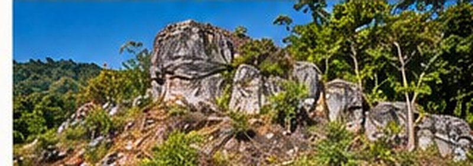

Project overview
The Tumfa Gold Project is located in the Kibi greenstone belt in the Eastern Region of Ghana, covering an area of approximately 44.8 to 44.99 km².
The project has both alluvial and hard-rock gold potential, with historical and artisanal mining activity in the area. The Kibi belt is a well-known gold-producing region.
Guilgal International is providing strategic consulting support to the project owners, including technical review, exploration planning and introductions to potential partners and investors.
Key highlights
- 44.8 to 44.99 km² project area
- Both alluvial and hard-rock gold potential
- Located in the prospective Kibi greenstone belt
- Historical and artisanal mining activity
- Exploration and resource definition opportunities
- Guilgal International providing strategic consulting and partner introductions
Project location

Regional geology

- Located within the Kibi greenstone belt.
- Favourable geology for gold mineralisation.
- Good access and regional infrastructure.
Exploration potential

- Alluvial gold targets in river systems and palaeo-channels.
- Hard-rock targets in greenstone sequences and shear zones.
Artisanal mining activity

- Historical and current small-scale mining activity.
- Provides valuable local knowledge and target indicators.
Exploration programme
- Detailed review and planning
- Exploration programme
- Drilling and target definition
- Resource estimate
- Development options and partner funding
Partnership opportunity
Tumfa offers exposure to gold in an established and proven mining region. We welcome discussions with experienced operators and partners.